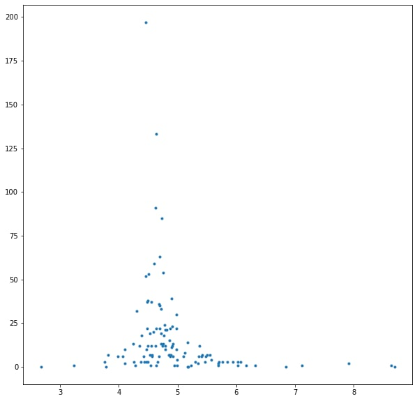

I've heard of such concept that the more people in group, the more difficult to reach concensus. Sounds obvious, but how fast that difficulty grows with group size?
I've made a simple model: there is a group of people of size N. They are trying to reach the consensus. At the begining they has no ideas. On each iteration each one do one of this actions: with probability A (acceptance rate) the participant accept the idea of random participant from previous iteration. With probability R (rejection rate) the participant decides to leave their own idea from previous step. And finnaly, with probability 1-(A+R) they generate a new idea. Process stops eather when every participant shares the same idea or when the process reach maximum iteration.
I've tried group sizes from 2 to 50 with different A and R. Conclusions are not surprizing. The more stubborn are in group the slower convergence. The more "idea generators" in group the faster the process. Even with the most utopian parameters for the group of size 12 is nearly impossible to reach concensus.
The same process but not on fully connected group, but on connected networks of fixed sizes but different connectivity. Edges are undirected. I.e nodes interact in both directions.
It looks like "line" took less to reach consensus then "triangle"
It's more interesting with four vertices. They are ordered as time to reach consensus grows. Hipothesys are that convergence may depend on number of cicles and/or on mean path length. There are also possible waves when part of the network can oscillate.
First four networks are where consensus is reached in minimum number of iterations. The other four are the slowest. All in order of time increasing. Now it's clearly seen, that the fastest is the "star" topology. When everybody know only one center node, and this node can communicate to each other. Three following topologies are a bit more complicated then basic star. There is stll one node communicates to each other (except second case, the star with one long ray).
The longes ones are interesting. First of them is the cycle of three nodes and long arm. It takes long to pass the idea through this arm, and the cycle can pass new idea back. Second is the simple chain of nodes. Third is two triangles connected with one edge. So it has two cycles and long paths with no shortcuts. The last one is simple chain ring. Long path, and while one side could reach consensus, there is possibe that new idea starts to spread on the other side.
For me it's clearly seen that the longer mean path in graph the longer it takes to reach consensus. Connection with number and length of cycles is not obvious.
Here is distribution till convergence for all 6-nodes graphs
The first picture is scatter plot showing how number of cycles (y) affects convergence time (x). The second shows scatter for mean path length (y) and convergence time (x).
This image shows scatter plot of predicted convergence time (y) against measured convergence time (x). Colored by mean path length. Features used for predictions are the number of cicles (sum, and cycles of different lenght as separate features) and mean path length.